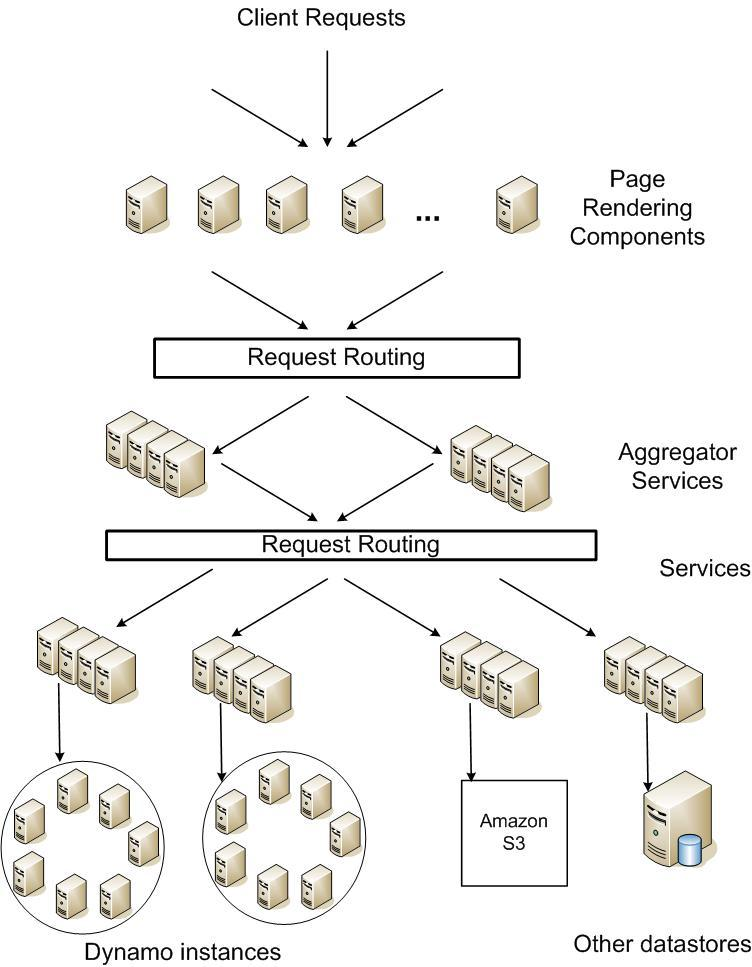

Dynamo¶
Summary¶
A highly available key/value store. Provides a place for various services (shopping cart, best seller lists, customer preferences, session management, product catalog, etc) to store their data in a “primary key only,” non-relational way. Dynamo’s gossip-based membership algorithm helps every node maintain information about every other node. Dynamo can be defined as a structured overlay with at most one-hop request routing. Dynamo detects updated conflicts using a vector clock scheme, but prefers a client side conflict resolution mechanism.
To achieve “always on”, dynamo will sacrifice consistency under certain failure scenarios (eventually consistent). It makes extensive use of object versioning and application-assisted conflict resolution in order to provide the most accurate state of the database as possible. That said, dynamo does try to give some control to services over durability and consistency, and allow them to make trade-offs between functionality, performance, and cost effectiveness.
Dynamo (at the time of the dynamo paper release) was able to support hundreds of thousands of concurrently active sessions (shopping cart service, holiday season). Keep in mind all the condensed notes in this file are from a paper written in 2007.
- Data is partitioned and replicated using consistent hashing
- Consistency is facilitated by object versioning
- Consistency among replicas during updates is maintained by a quorum-like technique and a decentralized replica synchronization protocol.
- Employs a gossip based distributed failure detection and membership protocol
- Completely decentralized: storage nodes can be added/removed without needing any manual partitioning or redistribution
General¶
Query Model¶
Simple read and write operations to a data item that is uniquely identified by a key. State is stored as binary objects (blobs) identified by unique keys. No operations span multiple data items and there is no need for relational schemas. Dynamo targets applications that need to store relatively small objects (sub 1MB).
ACID Properties¶
Atomicity, Consistency, Isolation, Durability. A set of properties that guarantee a database transaction is processed reliably. Typically, ACID model software will sacrifice availability over consistency. Dynamo targets services which operate with weaker consistency needs in any case where it is advantageous for higher availability. It does not provide any isolation guarantees, and only permits single-key updates.
Efficiency¶
Latency is of utmost importance in Dynamo. Throughput is next. Applications must be able to configure Dynamo such that they can consistently (99.9% percentile distribution) achieve their latency and throughput requirements. Cost efficiency, availability, and durability guarantees can all be traded off in order to prioritize latency and throughput.
Other¶
Dynamo was designed to be an internal, “in a safe network” service. There are no security related requirements such as authorization/authentication. Additionally, each service is expected to have its own Dynamo cluster. As such, Dynamo is only expected to scale to hundreds of storage hosts. More on scalability limitations later.
SLA¶
Amazon typical(2007): Provide a response within 300ms for 99.9% of its requests for a peak client load of 500 req/sec.
A typical page request may cause the page rendering engine to request data from over 150 services. These services often have multiple dependencies themselves. As such, a call graph will fan out in a tree structure. Each service in the call graph must comply with its SLA in order to get a response back to the user’s browser fast enough.
Describing an average, median, and expected variance is not good enough if you want to provide a good experience to all users. For example, a heavy user may have a longer buy history, and therefore could have their page loads perform worse that a less preferred customer. To avoid this, you must calculate the costs associated with providing a higher percentile of distribution in relation to response time. Amazon found anything beyond 99.9% (and whatever their latency target is) to be cost prohibitive.
Note: a load balancer’s selection of which write coordinator to pass a request to is very important when targeting performance at a 99.9% percentile distribution. Pay some attention to it.
Design Choices¶
Replication¶
A typical replication model performs a synchronous replication across some interface, providing a highly consistent operation which is very concerned with the correctness of an operation. Due to failing networks and servers, strong consistency and high data availability cannot be achieved at the same time. Some optimistic protocols allow writes/changes to occur on replication hosts in the background while waiting to see whether the “master” will recover. This introduces the possibility of conflicting changes, and the need arises to resolve these conflicts (sometimes manually, as in the case of skipping transactions forward in a mysql replication log). When do we resolve them, and who resolves them? - Per the When, a conflict arises upon a read or a write action. In most applications, the conflict resolution happens on write operations, at the expense of availability. Dynamo instead keeps writes available no matter what, relies on eventual consistency, and focuses on resolving conflicts when data is read. - Per the Who, a conflict can be resolved by either the datastore or the application. The datastore is somewhat limited as it can really only say “the last write wins.” The application on the other hand is aware of the data schema, and as such can pull in all the changes and merge them, hopefully returning a single unified view(/shopping cart). This requires more developer work.
Other Considerations¶
Incremental Scalability: Scale out one storage node at a time, with minimal ineraction and minimal to no performance impact.
Symmetry: Every node should have the same responsibilities as its peers. No unicorns. Much easier operationally
Decentralization: The design should favour decentralized, peer-to-peer techniques over centralized control.
Heterogenity: The design should be able to accommodate some nodes hardware being faster/slower than others. You should not have to upgrade all nodes to the same newer hardware spec each time you get new stuff.
As mentioned prior, Dynamo is targeted mainly at applications that need an “always writeable” data store where no updates are rejected due to failures or concurrent writes.
Second, as noted earlier, Dynamo is built for an infrastructure within a single administrative domain where all nodes are assumed to be trusted.
Third, applications that use Dynamo do not require support for hierarchical namespaces (a norm in many file systems) or complex relational schema (supported by traditional databases).
Fourth, Dynamo is built for latency sensitive applications that require at least 99.9% of read and write operations to be performed within a few hundred milliseconds. To meet these stringent latency requirements, it was imperative for us to avoid routing requests through multiple nodes (which is the typical design adopted by several distributed hash table systems such as Chord and Pastry). This is because multi-hop routing increases variability in response times, thereby increasing the latency at higher percentiles. Dynamo can be characterized as a zero-hop DHT, where each node maintains enough routing information locally to route a request to the appropriate node directly.
Architecture¶
| Problem | Technique | Advantage |
|---|---|---|
| Partitioning | Consistent Hashing | Incremental Scalability |
| High Availability for writes | Vector clocks with reconciliation during reads | Version size is decoupled from update rates |
| Handling temporary failures | Sloppy quorum and hinted handoff | Provides high availability and durability guarantee when some of the replicas are not available |
| Recovering from permanent failures | Anti-entropy using Merkle trees | Synchronizes divergent replicas in the background |
| Membership and failure detection | Gossip-based membership protocol and failure detection | Preserves symmetry and avoids having a centeralized registry for storing membership and node liveness information (ie:zookeeper) |
TODO Consistent hashing: distributedsystems-hashing
Vector clocks: Vector Clocks
TODO Sloppy quorum distributedsystems-quorum Useful: http://jimdowney.net/2012/03/05/be-careful-with-sloppy-quorums/
TODO Gossip protocols: distributedsystems-gossip
Merkle tree: Merkle Trees
Dynamo shares the same needs that any distributed architecture needs to address. Mainly, scalable and robust solitions for: - Load balancing - Membership and failure detection - Failure recovery - Replica synchronization - Overload handling - State transfer - Concurrency and job scheduling - Request marshalling and routing - System monitoring and alarming - Configuration management
Partitioning¶
Since Dynamo must scale incrementally, it requires a mechanism to dynamically partition data over a set of nodes. Dynamo uses consistent hashing to spread data across multiple storage hosts.
Let’s reference this image again:
Consistent hashing works by treating the output range of a hash function as a fixed circular space or “ring” (ie: the largest hash value wraps around to the smallest hash value). Each node in the system is assigned a random value within this space, which represents is “position” in the ring. When a data item represented by a key comes in, the key is hashed in order to get a value, and then the ring is walked clockwise until a node is found with a position larger than the data item’s position. That node, the first node found with a position larger than the data item, is assigned to be the coordinator for that key+data. As such, each node becomes responsible for the region in the ring between itself and its predecessor node. Because of this, we can see in Figure 2 that Key K would be owned by Node B. Node B owns the whole range between itself and Node A.
The main advantage of consistent hashing is that departure or arrival of a node only affects its immediate neighbours, and other nodes remain unaffected. The output range of the hash stays the same - the new node is just plopped down between two other nodes. This seems bad because if a new node got placed directly counterclockwise of, say, node D, wouldn’t that mean that node D would be responsible for a very tiny portion of ranges and therefore get less load and datat? Correct. The picture above shows nodes in nice and symmetrical placements, but in reality that node placement in the ring is random. This leads to non-uniform data distribution and load. And what if one of your nodes is a lot more powerful than the others, so you want it to be responsible for a larger portion of the hash?
To get around these issues, Dynamo uses a variant of consistent hashing: instead of mapping a node to a single point, a physical node gets mapped to multiple virtual nodes, each of which have a “token” (ie: position) along the ring. To summarize, each physical node is now responsible for an arbitrary/configurable number of tokens along the ring. Using virtual nodes has the following advantages:
- If a node becomes unavailable, the load handled by this node is evenly dispersed across the remaining available nodes (ie: other physical nodes can take control of the dead nodes’ virtual nodes)
- When a node becomes available again, or if a new node is added, the new node can accept a roughly equivalent amount of load from each of the other available nodes (Note: this means that node additions/removals can now have an impact on more than just their clockwise neighbour)
- The number of virtual nodes that a node is responsible for can be decided based on its hardware specs
Replication¶
Above we described how each node is responsible for a set of keys. Replication in dynamo is configured “per-instance,” thus, each node is responsible for replicating its content to N other nodes based on a configuration parameter. Phrased another way, each key, k, is assigned to a coordinator node (ie: the node responsible for that range of keys), and the coordinator is in charge of replicating the key+data items to N-1 clockwise successor nodes in the ring. So with N=3, referencing figure 2 above, node B replicates the key k to nodes C and D in addition to storing it locally.
The list of nodes that are responsible for storing a particular key is called the preference list. More details about how this list is maintained are in the Membership and Failure Detection section below. Each node in the cluster is designed to be aware of which nodes should be in this list for any particular key. To account for node failures, preference list contains more than just N nodes! Note how above we talked about virtual nodes - it is possible that the first N virtual successor node positions for a particular key may be owned by less than N physical nodes. To address this, the preference list for a key is constructed by skipping positions in the ring such that the list only contains distinct physical nodes. (...unclear on how it does this...)
Data Versioning¶
Dyano is eventually consistent, and as such it allows for updated to be propogated to all replicas asynchronously. A put() call may return success to its caller prior to the update actually making its way to all the replicas. As such, a subsequent get() may return “stale” data.
In Dynamo, when a client wishes to update an object, it must specify which version it is updating. This is done by doing a prior read operation which contains the vector clock information. More on that later.
Certain amazon applications, such as shopping cart, should never deny an “add to cart” or a “remove from cart.” When an update like this ends up happening on an older version of the object while a newer version of the object has not yet propogated, both versions are kept as immutable objects of different versions. These divergent versions are reconciled later, either by the client or by dynamo.
Most of the time, new versions subsume the previous version(s), and the system itself can determine the authoritative version (syntactic reconciliation, ie: a diff or a simple rule like if obj.v2 > obj.v1: obj=v2). However, in the presense of failures and concurrent updates, version branching may happen which result in conflicting versions of an object. In this case (dynamo) the client must perform the reconcilliation in order to collapse divergent branches back into one (semantic reconciliation). A typical example of this operation is “merging” different versions of a customer’s shopping cart. Using this method, updates will never be lost, but deleted items may resurface.
It is important to emphasize that if you don’t want to “lose” data, the client code you’re writing needs to explicitly acknowledge the possibility of multiple versions of the same data.
Vector Clocks¶
Dynamo uses vector clocks in order to “capture causality between different versions of the same object.” A vector clock is just a list of (node, counter) pairs. Each version of an object you shove into dynamo has a vector clock associated with it. If the counters on the first object’s clock are less than or equal to the counters on the second object’s clock, then we can assume that the second object is newer than the first, and the first can be forgotten. If this is not the case, then the two objects are considered in conflict and will require reconciliation.
As mentioned prior, a dynamo client must specify which version of the object that it is updating by using vector clock information obtained from a read operation. Upon processing a read request, if Dynamo has access to multiple branches that cannot be syntactically reconciled, it will return all the objects at the leaves, with corresponding version information in the context. An update usin gthis context is considered to have reconciled the divergent versions, and the branches are collapsed into a single new version.
Any storage node in dynamo is eligible to receive client get and put operations for any key. In a non-failure scenario though, where the client is aware of dynamo partitioning (ie: you’re not running requests through a load balancer), the operation will go to the top node in the preference list for that key region. Whichever node ends up handling the read/write is called the coordinator.
Remember that each node is capable of building a preference list for any particular key, so each node knows whether it is in the “top N nodes” for a particular key. If a load balancer routes a request to a node for a key in which it is not part of the top N of the key’s preference list, it will route the request onwards to the first of the top N nodes in the preference list. If a node receives a request in which it is part of the top N, but is not first in the top N, it will still perform the operation. This means that in a loadbalanced setup there is a lot more reconciliation.
Example Flow¶
With the above in mind, let’s go through an example:
Let’s assume that we’re using a load balancer to distribute requests. A client is doing a fresh write, a new object, and the request gets routed to Node X. Node X hashes the key and sees that it belongs in the top N nodes of that key’s preference list, and as such is able to perform this operation. It writes out that new object D1 and assigns a vector clock (X, 1). Another write comes in for the same object, and it gets loadbalanced to X again, who then creates a new object D2 and assigns a vector clock to it of (X, 2). At this point D1 will be cleaned up on node X because D2 descends from D1, but other nodes might not have D2 yet due to replication lag or failure, so D1 might still be lingering out there.
Now let’s say the same client updates D2, but the request this time is routed to Node Y. Node Y creates a new object, D3, and assigns a vector clock [(X, 2), (Y, 1)]. All good so far, as both X and Y are part of the top N preference list.
Now a new client comes along and does a read for a key associated to D. It ends up getting the old version D2(X,2) from a stale node. It does its change and then does a put(), and the request ends up hitting Node Z. Z says, ok, I am in the top of the preference list (or the top N in the preference list are down/unavailable, or Z is temporarily in a network segmentation), so it performs the operation, creating a new object D4[(X, 2),(Z, 1)].
Once everything is back to normal, nodes with D3 and/or D4 will find that they can get rid of D1 and D2, but upon receiving D3 or D4 they will find that there are changes between the two that are not reflected in each other. Both versions of the data must be kept and presented to a client (upon a read) for semantic reconciliation. These two versions are kept forever, until a client comes along and reconciles the data!
So, a client comes along and wants to update this key associated with D3/D4. The node it’s reading from, let’s say Y, knows of the two versions and as such passes back that information in the read’s “context”. In this context is a summary of the clocks of D3 and D4, namely [(X, 2), (Y, 1), (Z, 1)]. If the client can reconciliate the data received, it will then perform a put(). Let’s say that hits Node X. X will then create a new object with its sequence number iterated, ie D5[(X, 3), (Y, 1), (Z, 1)]. D3 and D4 can then be safely garbage collected by Dynamo.
Dynamo needs to do a read prior to every write operation in order to grab vector clock information. This can be very limiting in systems which have high write loads. Look at Cassandra for environments like this.
Failure and Membership¶
Hinted Handoff¶
If Dynamo used a traditional quorum approach, it would be unavailable during server failures and network partitions, and would have reduced durability even under the simplest of failure conditions. To remedy this, it does not enforce strict membership and instead uses a “sloppy quorum,” where all read and write operations are performed on the first N healthy nodes, not necessarily the first N nodes encountered when walking the consistent hashing ring. Let’s use Figure 2 again where N=3 as an example:
If node A is temporarily down or unreachable during a write operation, then a replica that would normally have lived on A will now be send to node D. The replica sent to D will have a hint in its metadata that suggests which node was the intended recipient of the replica (in this case, A). Nodes that receive hinted replicas will keep them in a separate local database that is scanned periodically. Once A is detected as having recovered, D will attempt to deliver the replica to A. Once the transfer succeeds, D will then delete the object from its local store (but it will still have the replicated copy in its regular datastore). During this whole process, the same amount of object replicas are kept.
If node A is temporarily down or unreachable during a write operation, then a replica that would normally have lived on A will now be send to node D. The replica sent to D will have a hint in its metadata that suggests which node was the intended recipient of the replica (in this case, A). Nodes that receive hinted replicas will keep them in a separate local database that is scanned periodically. Once A is detected as having recovered, D will attempt to deliver the replica to A. Once the transfer succeeds, D will then delete the object from its local store (but it will still have the replicated copy in its regular datastore). During this whole process, the same amount of object replicas are kept.
This ensures availability even in the event of network segmentation or server failures, at the expense of resiliency. For applications requiring the highest level of availability, you can set W (minimum number of confirmed writes) to 1, which ensures that a write is accepted so long as a single node has durably written the key to its local store. In practice, most applications set W to 2 or more. More details about N, R, and W later.
Merkle Trees¶
Hinted handoff works best if system membership churn is low and server/network problems are transient. Should that not be the case and some scenario occurs where a node fails forever before it can pass back its hinted replica to the proper node, dynamo uses a replica synchronization method involving Merkle Trees.
A Merkle tree is a hash tree where each leaf is the hash of an individual key. Parent nodes higher in the tree are hashes of their respective children. So let’s think of a merkle tree with 20 leaves, a parent responsible for 4 leaves each, and a grandparent (root) responsible for those 5 parents. If a node wants to know whether another node has the same keys as them, they just need to compare each others root (grandparent) hashes. If they differ, then they can check the next level down for differing hashes. They may only find 1 out of 5 different, and can then compare the hashes of each leaf in only that 1 branch to see what is different or missing. This allows an efficient comparison of data without having to scan through every value.
In Dynamo, each node maintains a separate Merkle tree for each key range that it hosts (ie: a Merkle tree for every virtual node). This allows nodes to exchange the root node of the Merkle tree with all other nodes which have the same key ranges (virtual nodes) in common. The disadvantage with this approach is that when a node joins or leaves the system/virtual nodes are redistributed, key ranges change and require the tree to be recalculated. Mitigation of this effect is discussed later on.
Membership and Failure Detection¶
Node A may consider Node B failed if node B does not respond to node A’s messages (even if B is responsive to node C). Node A will then route requests to alternate nodes which map to B’s partitions. Node A will then periodically check whether connectivity to B has recovered. Node A will not “report” to anyone that B is down, it will simply mark it as down locally. Additionally, if node A does not need to ever talk to node N, then it does not care about node N’s state. As such, temporary node failure is “detected” on a per-node basis - there is no global view for node failure.
It is beneficial however to have some sort of global cluster state for when permanent node additions/removals happen. A node outage rarely signifies a permanent departure, and therefore it should not trigger a rebalancing of virtual nodes or a repair of unreachable replicas. As such, manual node addition/removal was deemed most appropriate. This is done via a command line tool or web browser interface with dynamo. The node that serves the add/remove request writes the membership change and its time of issue to persistent store, keeping a history. A gossip-based protocol propagates membership changes and maintains an eventually consistent view of membership. Each node contacts a peer chosen at random every second, and the two nodes reconcile their persisted membership change histories.
When a node starts for the first time, it chooses its set of tokens (virtual nodes) and maps nodes to their respective token sets. That mapping is then persisted on disk and initially only contains the local node and the token set. During the gossip-based random-node-every-second process, nodes will compare their mapping and token set information with each other and reconcile that information. So, a new node will very likely gossip an existing node that is already fully aware of the rest of the cluster, getting the new node up to speed right away.
Note:: The above method of cluster data discovery can be fouled up a bit if you’re adding multiple nodes at once. If an administrator added node A, then added node B, these nodes would not be immediately known to each other. To mitigate this, a user can configure something called “seed” nodes, which are nodes that all other nodes can eventually reconcile with (outside of the random every second process). These nodes essentially have the best view of the current state of the cluster
Addition/Removal of Storage Nodes¶
When a new node (say, X) is added into the system, it is assigned a random scattering of virtual nodes (tokens) around the ring. Using Figure 2, let’s just use one virtual node as an example. Let’s say that virtNodeX is added to the ring between virtNodeA and virtNodeB. As such, with N=3, X is now responsible for the ranges between F-G, G-A, and A-X. As a consequence, nodes B, C, and D no longer have to store the keys in their respective tail ranges. So, upon confirmation from X, they will then transfer the appropriate set of keys to X. When a node is removed from the system, this proces happens in reverse.
Implementation¶
Dynamo allows a choice of persistent data store (“local persistence engine”). This is typically Berkeley Database (sub 100kB objects), MySQL (larger objects), and an in-memory buffer with persistent backing store.
As for the request coordination, each client request results in the creation of a state machine on the node that received the client request. The state machine contains all the logic for identifying the nodes responsible for a key, sending the requests, waiting for responses, protentially doing retries, processing the replies and packaging the response to the client. Each state machine instance handles exactly one client request.
An example read operation (minus failure states and retry operations):
# send read requests to the (virtual) nodes # wait for minimum number of required responses # if too few replies were received within a given time bound, fail the request # otherwise, gather allt he data versions and determine the ones to be returned # if versioning is enabled, perform syntactic reconciliation and generate an opaque write context that contains the vector clock that subsumes all the remaining versions
After a read request is returned to a client, the state machine sticks around for a short while in order to receive any outstanding responses. If stale versions were returned by any of the virtual nodes, the coordinator updates those nodes with the latest version. This is called read repair and it saves the Merkle Tree based anti-entropy process described above from having to do it later.
Since each write usually follows a read operation, the coordinator for a write is chosen to be the node that replied first to that read operation. The fastest replying node is stored in the context information of the request. This optimization is useful in edge case 99.9% situations because the node that gave out the read information is going to be the one doing the write.
NRW: Performance vs Durability¶
- N=Node replicas. How many nodes you want a copy of your object stored on.
- R=Read responses. How many nodes you want an answer from in order to consider your read successful (and consistent)
- W=Write responses. How many nodes you want an answer from who have successfully written your object
The common (N,R,W) configuration used by most Dynamo instances within amazon is (3,2,2). They will run this on clusters with a couple hundred nodes, spanning multiple datacenters (over high bandwidth, low latency interconnects). Since the R or W response is exchanged between the coordinator and the nodes, intelligent selection of nodes is required such that client facing requests do not have to span across datacenters.
Above was mentioned an in-memory buffer with persistent backing store. Certain services that use dynamo require higher performance at the expense of durability. To acheive this, dynamo provides the ability for each node to maintain an object buffer in its main memory. Each write operation is stored in the buffer and gets periodically written to storage by a writer thread. In this scheme, read operations first check if the requested key is present in the buffer, and if it is, it’s returned without hitting storage. They saw factor of 5 decreases in latency at the 99.9% percentile during peak traffic even for a very small object buffer. The danger here is that if a node goes down, all the contents of its buffer (ie: a bunch of writes) are lost. To mitigate this, the write operation in this scenario is refined to direct at least one N node to perform a “durable write.” The coordinator still only waits for W responses, so the client latency is not affected.
Partitioning¶
Strategy 1: T random tokens per node and partition by token value: In this model, when a physical node joins the ring, a random set of tokens are created at “random but uniform” locations around the ring and then these tokens are assigned to the new node. The token ranges are not perfectly uniform, and get worse when plopped down between existing tokens at various distances. All other existing nodes which have a new token plopped down between a token range they control then need to redefine their own token ranges. This also necessitates that they update their Merkle trees, and they also need to start up a background thread to scan their local storage and transfer the keys that they own over to the new node. This kinda sucks and takes a long time under high load.
Strategy 2: T random tokens per node and equal sized partitions: in this model, the hash space is divided up evenly while the token placement remains “random but uniform.” Not sure about this one, seems dumb
Strategy 3: Equal distribution of tokens and partitions: Hash space is divided evenly, and a token is placed at each segment. This doesn’t change. A node is added, and it steals tokens from other nodes in order to take on some load. Same happens if a node leaves. This strategy still has the problem of needing to transfer replicas in a background thread, but avoids merkle tree rebuilds and uneven hash sizes.